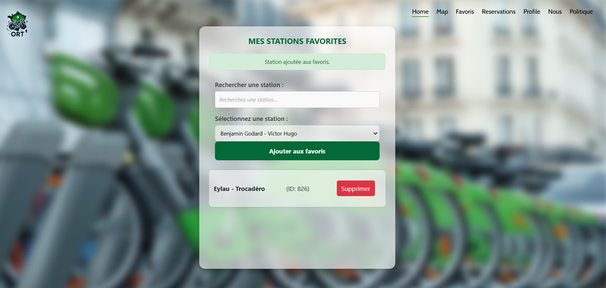
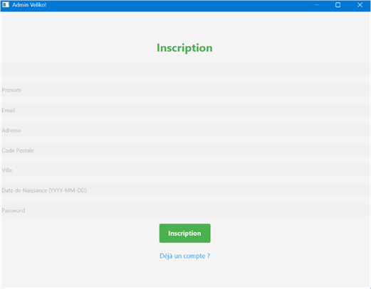
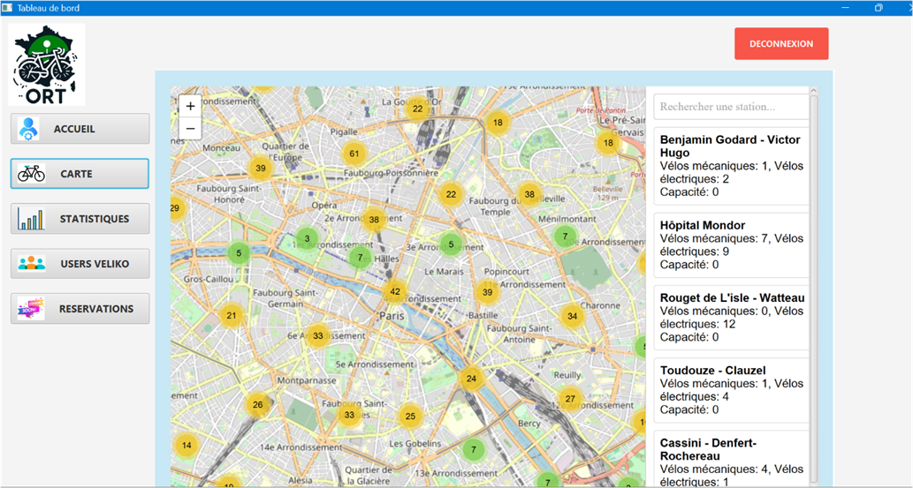
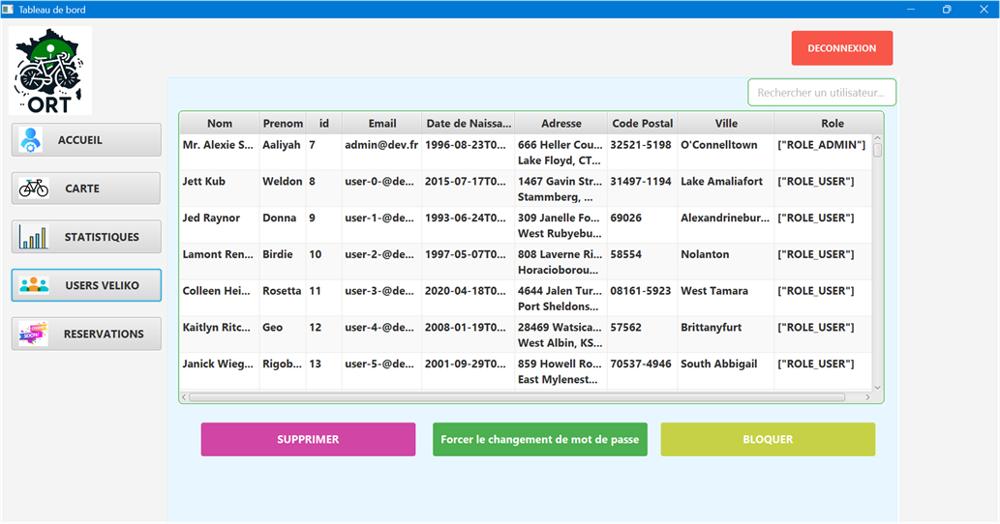
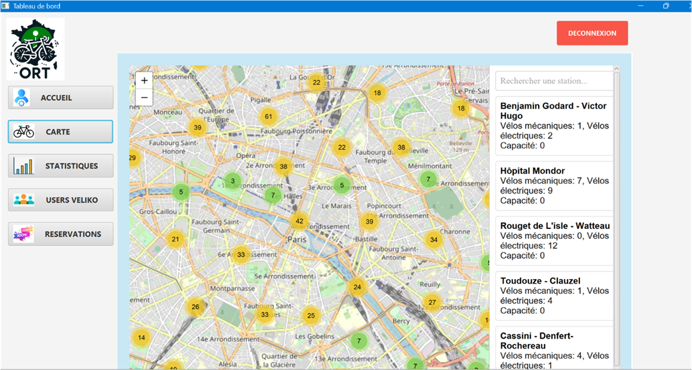
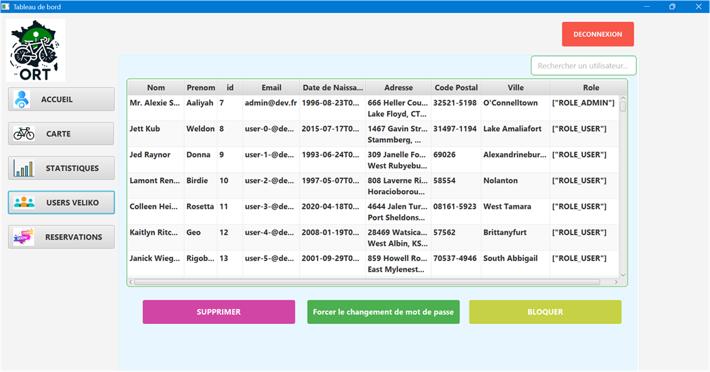

SCOLAIRE
Calcul d'IMC
JAVASCRIPT & HTML
Le but de ce projet est de coder un calculateur d'IMC à partir des valeurs entrées par l'utilisateur dans les 2 inputs.
Générateur de mot de passe
JAVASCRIPT & HTML
Le but de ce projet est de coder un générateur de mot de passe en utilisant les types de caractères sélectionnés par l'utilisateur. 3 checkboxes doivent être sélectionnés au minimum. De plus, l'utilisateur peut choisir la longueur du mot de passe et le copier dans le presse-papier par la suite.
Jeu du mémory
JAVA & SCENEBUILDER
Le but de ce projet est de coder un jeu du mémory avec des cartes placées aléatoirement. La machine compte alors le nombre d'essais avant la victoire.
Autoécole - Gestion tests permis
JAVA & SCENEBUILDER
Le but de ce projet est de coder une interface de gestion des incriptions à différents tests de permis de conduire pour une autoécole. L'interface permet d'inscrire un eleve à un test et d'afficher sa liste d'inscription et indiquant si le test est terminé ou non.

Fleuriste
JAVA & SCENEBUILDER
Le but de ce projet est de coder une interface de commandes de fleurs auprès d'un fleuriste. Les commandes des différents clients sont ensuite enregistrées sous forme de tableau.

PROJET VELIKO
PARTIE CLIENT (WEB) -- PROJET SYMFONY
Veliko est une entreprise qui fournit une application pour savoir la disponibilité des vélos urbains.
Elle est née post initiative "Vélib' Métropole" de Paris.
L'application Véliko a pour objectif de fournir aux utilisateurs des informations précises concernant la disponibilité des vélos au sein des 1400 stations réparties à travers Paris et l'Ile-de-France.

PARTIE ADMINISTRATEUR -- JAVA FX
Le projet VELIKO Administrateur a pour but de présenter une interface de contrôle générale sur l'application VELIKO WEB.
On y retrouve la liste complète des utilisateurs et la maitrise des comptes, la carte de Paris et les disponibilités de chaque station, ainsi qu'un tableau statistique réalisé avec POWER BI MICROSOFT.




